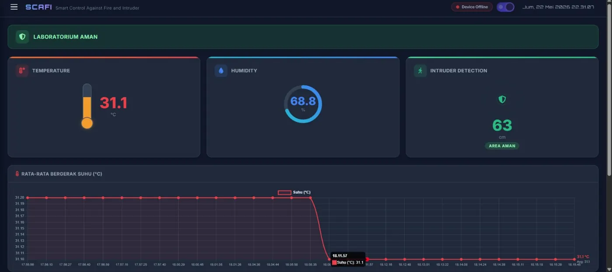
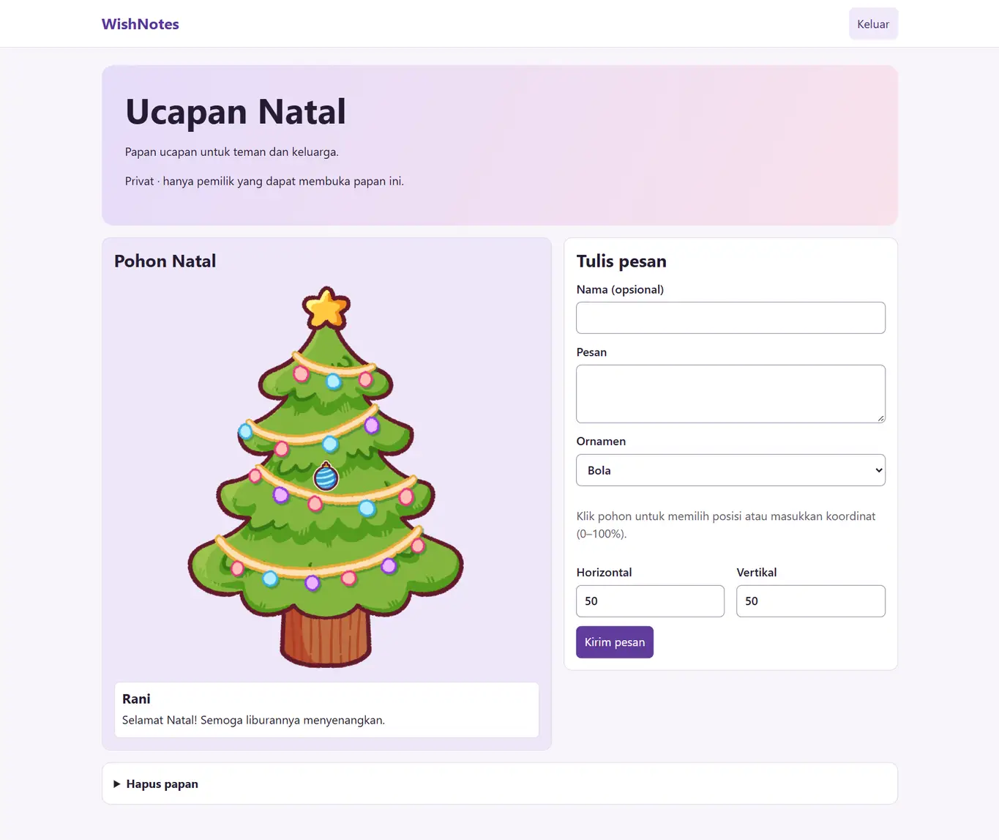
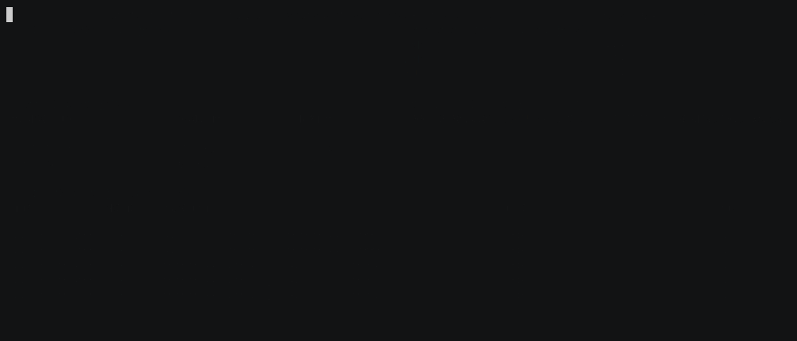

COSTMOSYS Cow Stress Monitoring System
Two-node ESP32 system with ESP-NOW, Firebase telemetry, and sprinkler relay control, plus a YOLO26n model that detects cows and people in CCTV frames.
Open Internship in Software Applied AI IoT
Computer Engineering Technology student at IPB University, building across IoT, applied AI, software and networks. I pick up new tools quickly when I have a project to apply them to.
Two-node ESP32 system with ESP-NOW, Firebase telemetry, and sprinkler relay control, plus a YOLO26n model that detects cows and people in CCTV frames.

Nine Node.js services run on one Ubuntu VPS (2 vCPU, 2 GB RAM) under systemd, plus a 9Router model gateway. The services are written in TypeScript. A master tracker watches the other agents, reviews their work, and handles alerts. Telegram and a React web dashboard handle commands and history.

A theft and fire alarm with an ultrasonic sensor, a DHT22, and buzzers that sends alerts to Firebase and Telegram when fire or intrusion thresholds are met.

A boarding-house door lock built on ESP32, RFID, and MikroTik: open with a registered card or through a web page reachable only on the boarding-house Wi-Fi, with access logged by a FastAPI backend.

Sensor wristband prototype streaming heart-rate and blood-oxygen readings to ThingsBoard on an AWS EC2 Ubuntu server, with data analysis in RStudio.

Calibrated logistic regression on the IBM Telco dataset served in a Streamlit app for single and batch predictions.

A Laravel app for leaving notes on themed boards, including a Christmas tree board where visitors place ornaments with messages at chosen coordinates.

Live packet monitor and mini-IDS in the terminal. Parses Layer 2–4 and DNS, tracks bandwidth and top talkers, and alerts on port scans, SYN spikes and DNS bursts.
I work with agentic, multi-agent workflows to plan, build, and review my work. On my own VPS, a master tracker watches eight other services, reviews their output, and handles alerts.
Simplified illustration of my multi-agent automation platform. Read the case study
What I use in projects and what I’ve studied in class.
Interfaces, APIs, and the data behind them.
I connect web interfaces to backend APIs, manage application state, and handle failed requests and retries.
Tools I use JavaScript / TypeScript, Node.js, React, Express, Python, PHP, Laravel, HTML, CSS, SQL, SQLite, REST APIs, Git.
See projectsModel routing, job queues, and review.
I run agents as Linux services, route model requests, and queue jobs. If a review can’t run, the output waits. I monitor the services and keep a rollback path for fixes.
Tools I use LLM APIs, 9Router, Linux, systemd, Node.js, Python, Telegram controls, Docker Compose, n8n.
AI tools assist my work. I direct implementation, audit changes, and operate the systems.
See projectsHow devices connect, route traffic, and control access.
I studied routing, switching, and wireless networking through Cisco courses. I’ve also used MikroTik to configure network access and user authentication. In netwatch-rs I applied that foundation to raw packet parsing, traffic statistics, and rule-based anomaly detection in Rust.
Coursework & practice Cisco networking, routing, switching, wireless networks, MikroTik, access configuration, user authentication, Rust packet parsing, pcap, network security rules.
See projectsCoursework & practice
Taking measurements and connecting them to software.
I work with microcontrollers and sensors, from taking a reading on an ESP32 to sending it to a ThingsBoard server on AWS and onto a dashboard.
ESP / ESP32, Arduino, sensors, IoT, ESP-NOW, Firebase, AWS, Ubuntu server, ThingsBoard, device-to-dashboard data flow.
See projectsStudied in coursework
Logic that connects inputs, conditions, and outputs.
In class, I studied PLC control logic in CX-Programmer and used Factory I/O to see how it responds to simulated inputs.
PLC logic, CX-Programmer, Factory I/O, input/output relationships, control sequences.
See projectsStudied in coursework
Understanding the data, the OS, and the machine.
I used RStudio to process and analyse VitaLoop’s sensor data. My coursework also covers MATLAB, Linux, and computer architecture.
RStudio, MATLAB, Linux, computer architecture, data processing.
See projects3.61/ 4.00
Coursework in software, networks, and physical systems.
Teknologi Rekayasa Komputer
Computer Engineering Technology, applied bachelor’s program (D4)
Semester 5 (2026) / Angkatan 61
The program spans computer networks, sensor-based IoT, and intelligent systems and automation. Official program description
Completed course, 29 Dec 2024. Completed courses, not a professional CCNA certification.
Certificate PDFCompleted course, 17 Dec 2025. Completed courses, not a professional CCNA certification.
Certificate PDFEmail, WhatsApp, GitHub, LinkedIn, or the one-page CV.
I’m looking for an internship in software, applied AI, or IoT. Send me a short note about the role, and I’ll reply with the projects that fit.